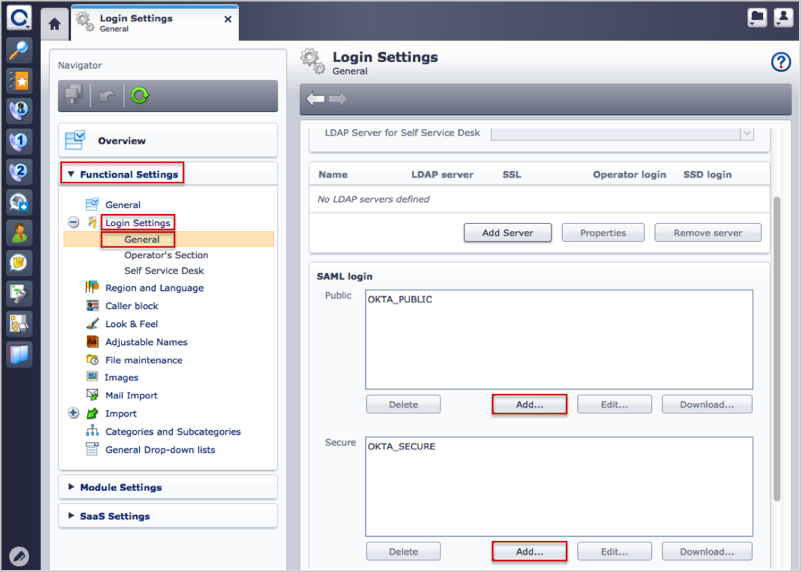
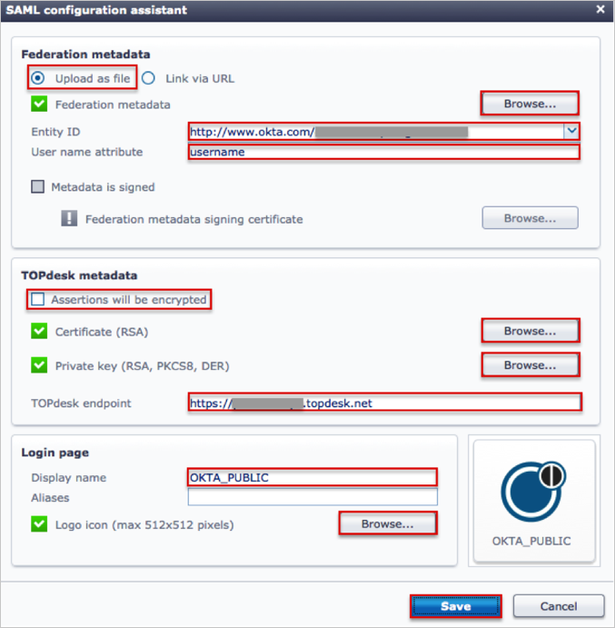

Save the following metadata as metadata.xml:
Sign in to Okta Admin app to have this variable generated for you.
Log in to TOPdesk as an administrator.
Navigate to Settings > Functional Settings > Login Settings > General.
Scroll down to the SAML login section and click the Add button to create a SAML 2.0 setup for the public (Self Service Desk) or secure (Operator’s Section) realm.

The SAML configuration assistant window appears, do the following (see screen shot at end of step for reference):
In the Federation metadata section:
Select the Upload as file button.
Click Browse and locate and upload the metadata.xml file you saved in step 1.
Select Entity ID from the dropdown list.
For User name attribute enter username.
In the TOPdesk metadata section:
Uncheck Assertions will be encrypted.
Click Browse to locate and upload a RSA certificate of the TOPdesk server.
Click Browse to locate and upload a Private key of the TOPdesk server.
For TOPdesk endpoint enter the hostname of the TOPdesk server.
In the Login page section:
Display name: Enter OKTA_Public for the public (Self Service Desk), or OKTA_SECURE for secure (Operator’s Section) realm.
Logo icon: Click Browse to download the following logo: http://developer.okta.com/docs/sdk/core/csharp_api_sdk/icons/logo.png
Click Save.

Done!
Notes:
IDP-initiated and SP-initiated flows are supported.
Just In Time (JIT) provisioning is not supported.
For SP-initiated flows:
Open one of the following login pages:
https://[yourSubDomain].topdesk.net/tas/public/login/saml - public (Self Service Desk) login.
https://[yourSubDomain].topdesk.net/tas/secure/login/saml - secure (Operator’s Section) login.
Click either OKTA_PUBLIC for the public (Self Service Desk), or OKTA_SECURE for secure (Operator’s Section) login.